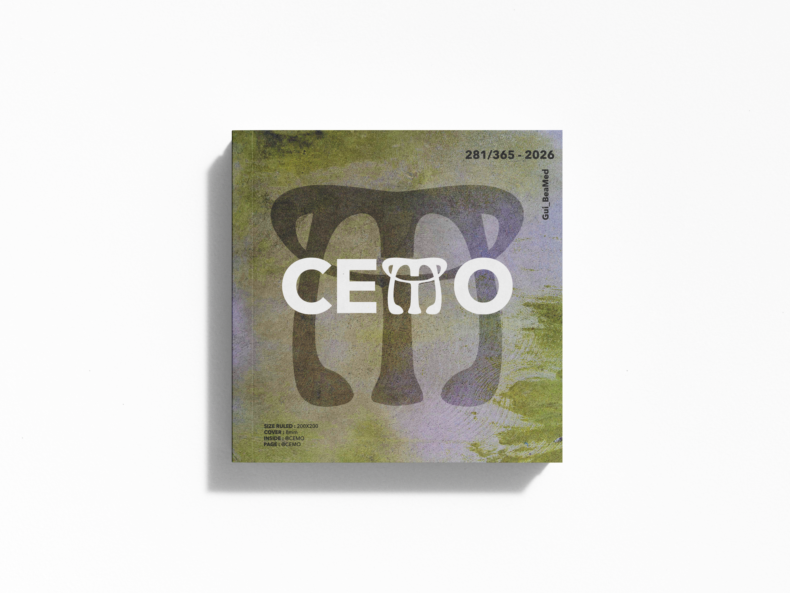
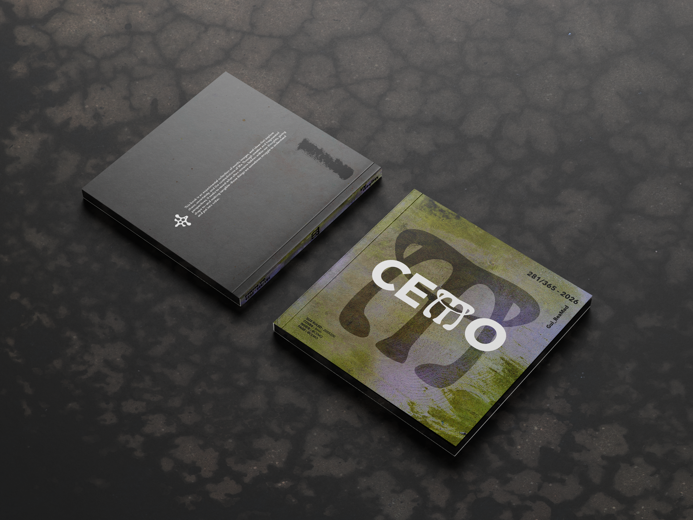
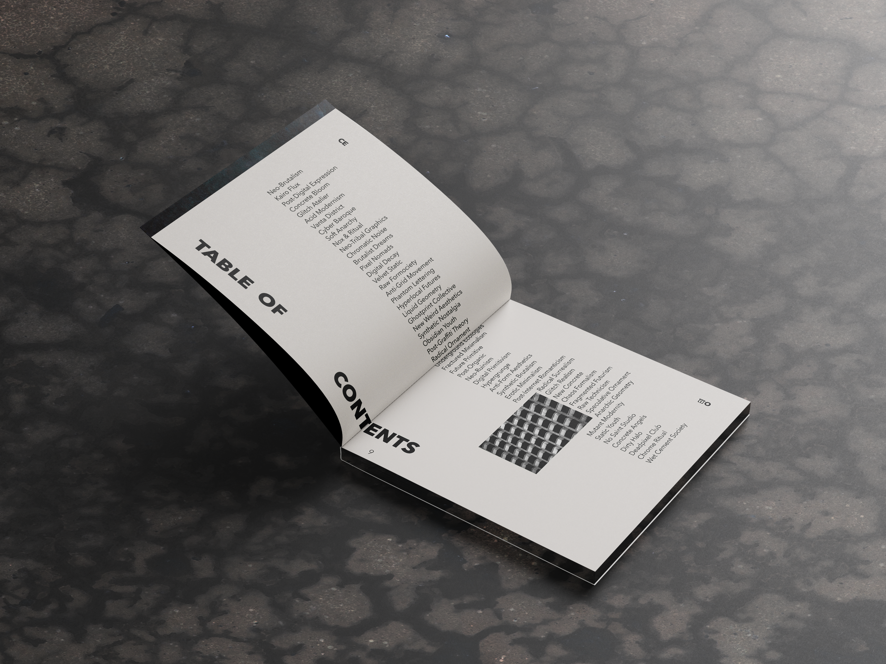
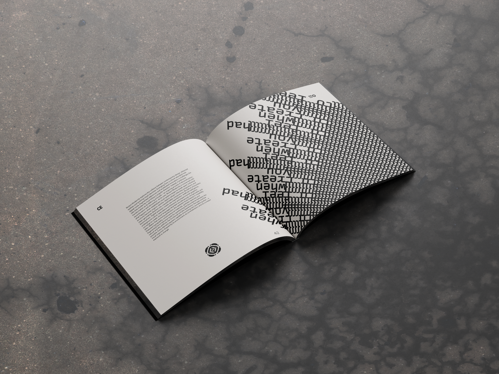
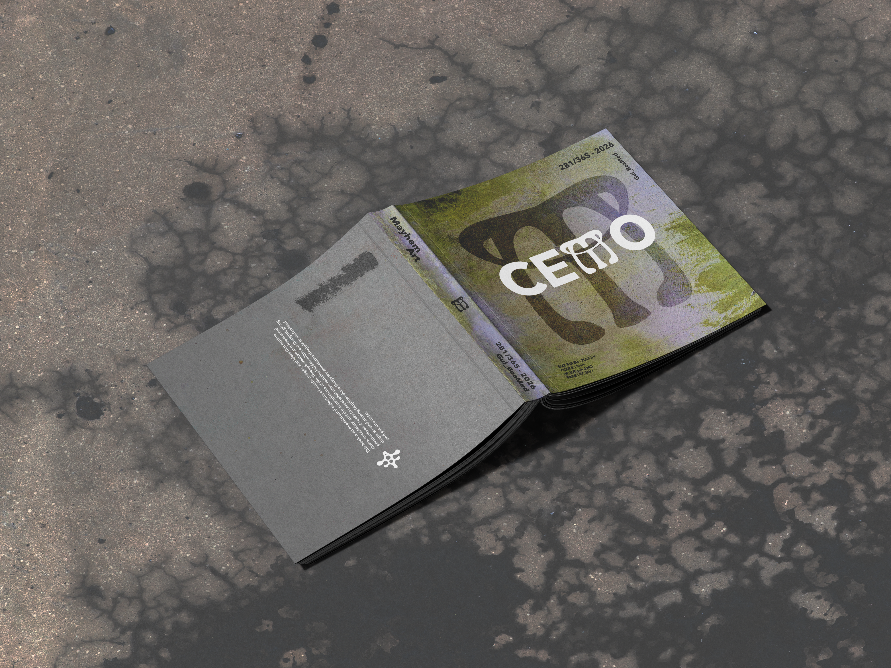

IDENTIDAD VISUAL
CEMO
Chaos Formalism
Diseño editorial · Dirección de arte
Año
2026
Disciplina
Identidad visual
Cliente
Nombre del cliente

01 / CONCEPTO
La idea detrás del proyecto
Proyecto que plantea y explora la relación entre caos y estructura a través del diseño gráfico experimental, las vanguardias artísticas, las estéticas postdigitales y la cultura underground.
El proyecto parte de una reflexión sobre la saturación visual contemporánea.




RESULTADO
Una identidad, un lenguaje, una idea.
Texto final para cerrar la presentación del proyecto.